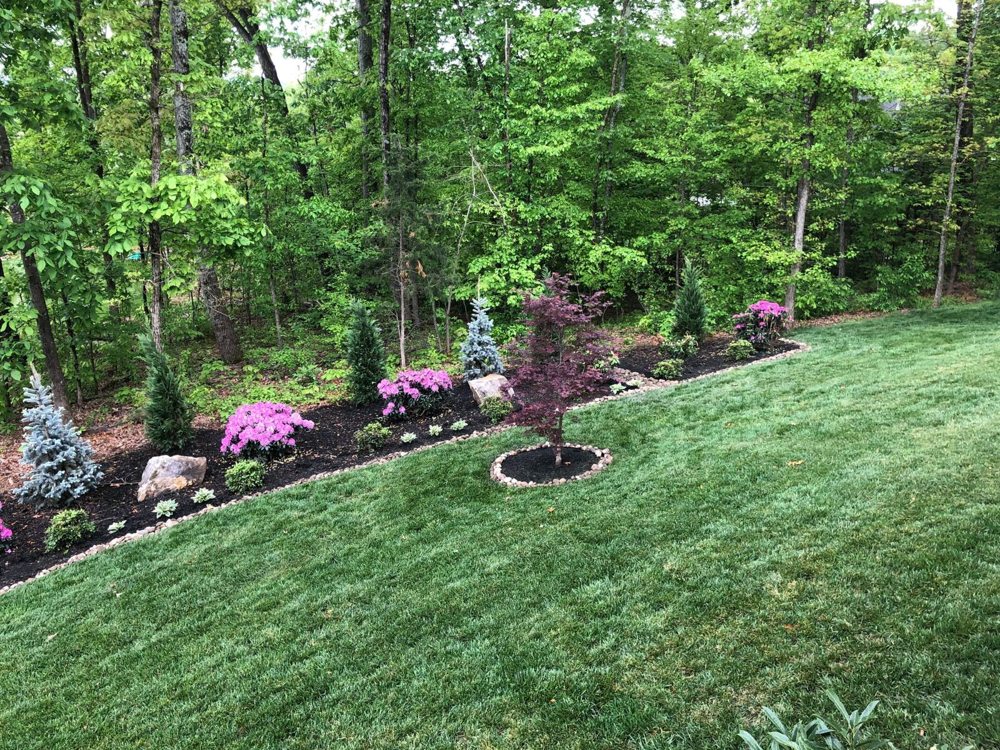

When was the last time you scheduled lawn care? If the memories grow dim, it’s time to reach out to The Yard Force.
Don’t underestimate the benefits and values derived from investing in expert yard management. Keep reading to discover everything our staff can do for you.
Improved Curb Appeal Makes Great First Impression
When it comes to increasing property values, curb appeal is the first chance a homeowner has to impress potential buyers. Even small properties have lawns, and caring for them improves the overall appearance of the house. If the siding and roof look great, but the lawn looks decrepit and overgrown, the buyers focus on the negative rather than the positive.
How does a beautiful lawn increase curb appeal?
- Adds a sense of style: The right type of care can help a home stand out. When a house blends in with its surroundings, buyers won’t consider it anything special.
- Defines the property: Maintaining a lawn helps set clear boundaries and gives the interested party an obvious outline of the property’s size. It also provides contrast to surrounding homes that may not showcase the same attention to detail.
- Highlights architectural features: When a home has unique features like columns, a yard can enhance them. The perfect care techniques frame these elements so they continue adding value to the property.
Improving curb appeal also helps a residence sell faster. When the property stands out, buyers don’t want to miss out.
A Consistently Beautiful Yard Makes a Property More Enjoyable
Investing in quality lawn care is about more than just improving curb appeal; it also enhances the property’s comfort and flexibility. For example, if the yard is filled with tall grass that grows to waist height, you may find playing catch more difficult.
Unkempt lawns also increase the prevalence of pests like rodents and insects. Some of these creatures, like ticks, could have long-term effects on your family’s health. No one wants to spend time in a yard that threatens their well-being.
Some people may feel embarrassed about a property that doesn’t look well cared for. While they may love hosting barbeques or pool parties, patches of dead grass and dying flower beds may convince homeowners to avoid these gatherings.
You deserve an outdoor space that reflects the quality of the home’s interior. With regular expert help, every homeowner can convert their yard from a liability to an asset.
Caring for the Lawn Improves Its Health
A healthy lawn is a beautiful lawn. When homeowners forgo regular maintenance and expert help, they negate any curb appeal the property’s exterior provides. The essential components of caring for a yard include:
- Proper fertilization: Every yard has a different combination of nutrients. Professional lawn fertilization ensures the trees and flowers have everything they need to stay healthy.
- Regular hydration: Many homeowners don’t realize trees sometimes need help staying hydrated. Keep them watered during the winter and in periods of drought.
- Improved soil health: Wind and water erode the land and destabilize trees and the foundations of structures. Regular lawn services can eliminate or reduce erosion.
- Meticulous weed control: Weeds make a yard look unkempt, strangle flowers, and destroy pavers. While a few weeds won’t hurt, eliminate the vast majority.
- Consistent trimming: Most tree species require annual trimming, and you should cut the grass at least weekly. This improves both the health and appearance of the yard.
- Intentional pruning: Both trees and flowers need pruning. The process eliminates diseased or unhealthy branches and helps other plants thrive.
Seasonal Lawn Maintenance Shows an Investment in Quality
A homeowner who invests in regular lawn care not only gains a property value enhancement, but they also maintain the trust of potential buyers. The human mind naturally makes assumptions based on first impressions. An unhealthy lawn could prevent interested parties from examining the home’s interior.
Imagine you look at pictures of your dream home online, but drive by it and the yard looks unkempt. It could give the impression that the website pictures were old and meant to trick potential buyers.
When a property’s exterior has low curb appeal or looks ignored, guests quickly assume the interior looks the same. It communicates that the homeowner doesn’t have the attention to detail or motivation to make repairs or invest in quality features.
To ensure you can capitalize on the property’s increased value, don’t ignore regular maintenance. Even a weekly mowing goes a long way.
Schedule Expert Service for Your Property Today
At The Yard Force, our staff thrives on creating yards that make a stunning impact. Don’t miss out on the opportunity to add more value to your home. Our customers love our dedication to quality service, the use of premium materials, and surprisingly competitive prices.
To obtain a free quote for reliable lawn care, call (865) 290-8815.